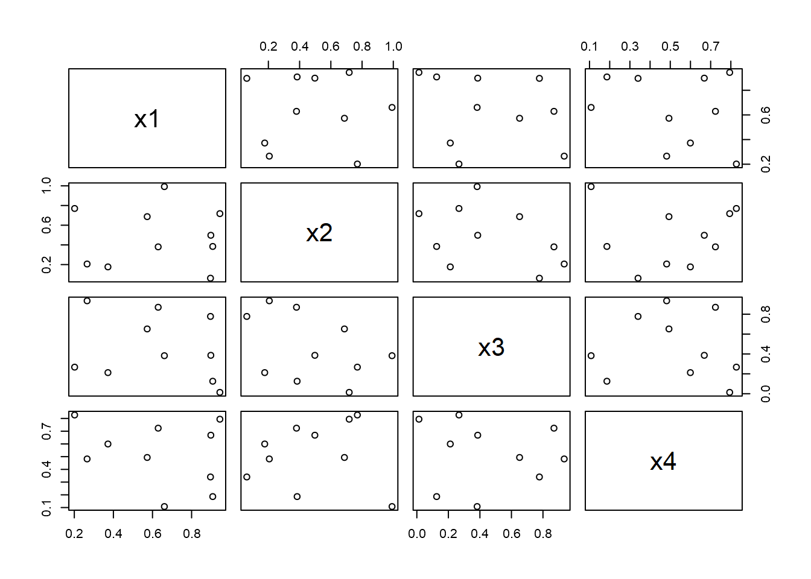
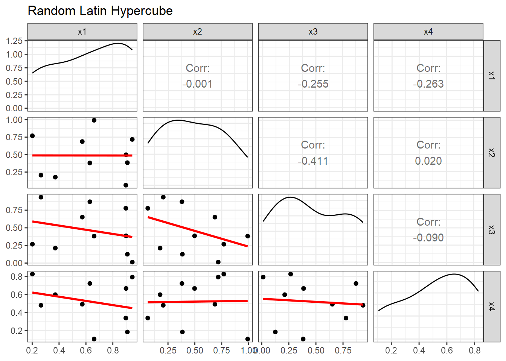
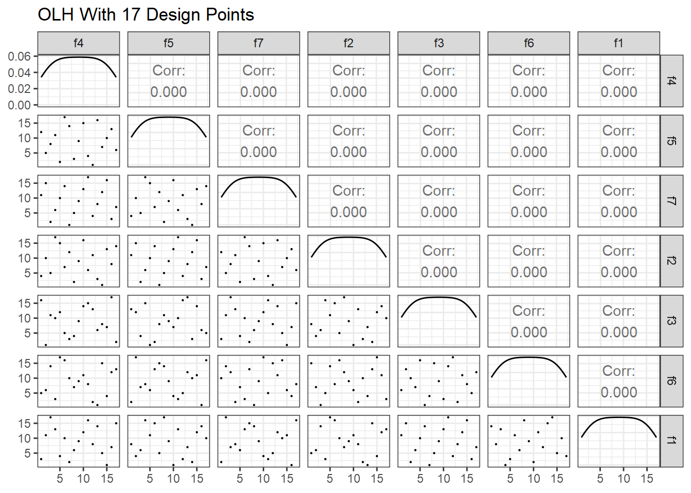
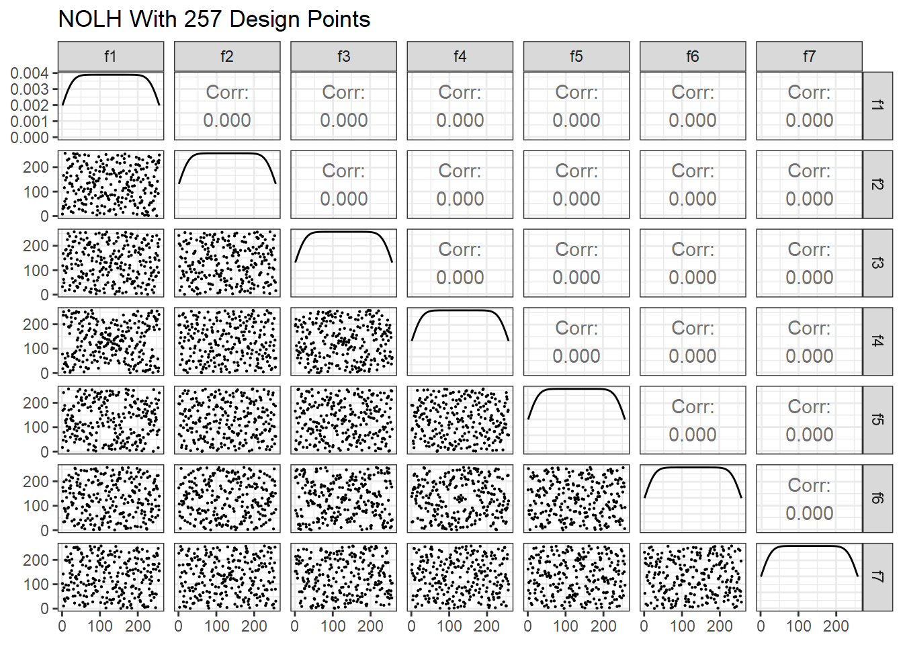
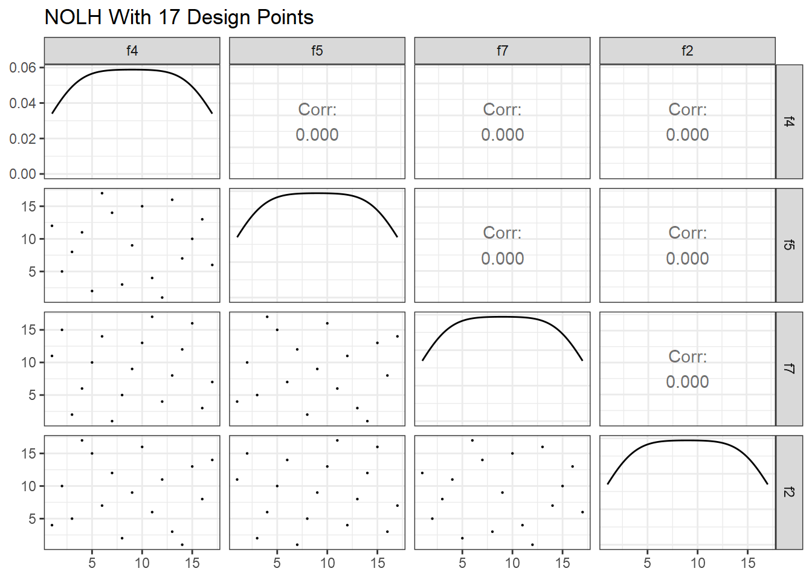
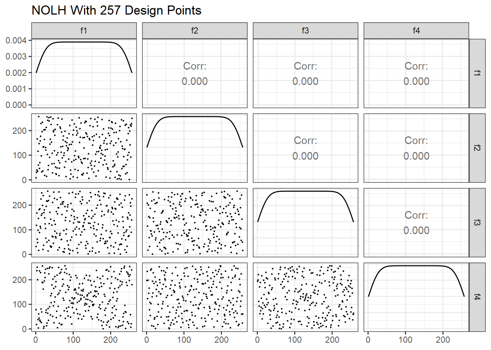
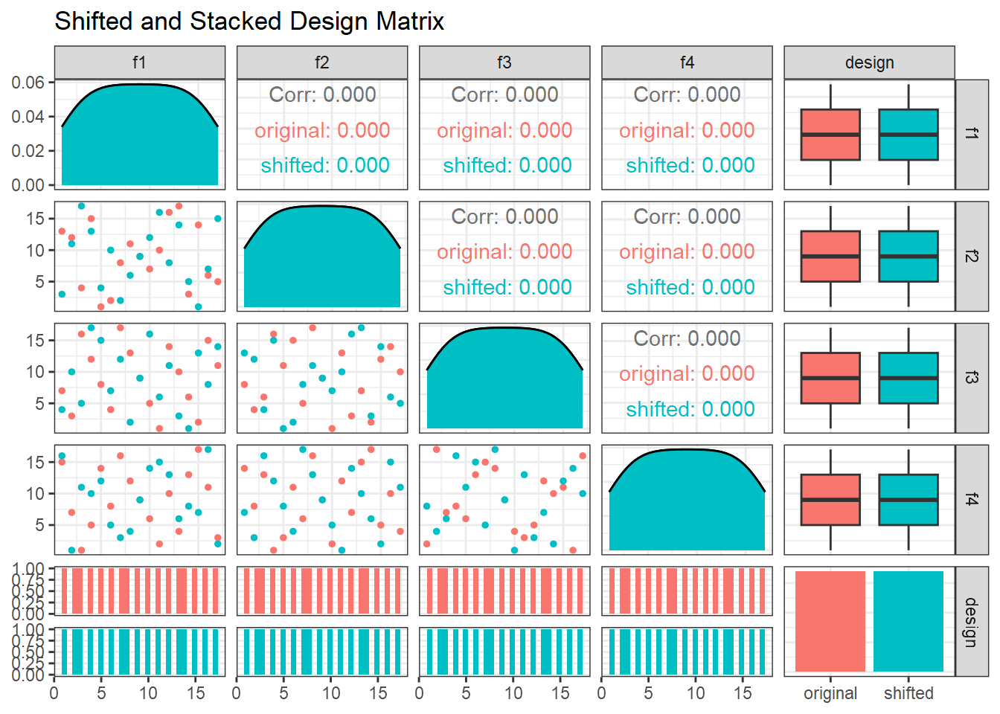

library(tidyverse)
library(plotly)
centerPoint = tibble(
x1 = c(rep(c(-1, 1), 4), 0),
x2 = c(rep(c(-1, -1, 1, 1), 2), 0),
x3 = c(rep(c(-1, 1), each=4), 0),
center = c(rep("y", 8), "n")
)
plot_ly() %>%
add_trace(data = centerPoint, x = ~x1, y = ~x2, z = ~x3,
color=~center,
colors = c('#0C4B8E', '#BF382A'),
type='scatter3d', mode='markers') %>%
layout(title = 'CCD With Center Point', showlegend = FALSE,
scene = list(camera = list(eye = list(x = -1.0, y = 1.25, z = 0.3))))Advanced Designs
So far, we have considered designs with just two levels per factor, which is fine for inherently binary factors. However, if our study requires us to include a factor that can take on more than two values, or even a continuous range of values, or if we suspect that the relationship between a predictor and a response is non-linear, we need a different experimental design.
Introduction and Background
In this chapter, we will design experiments that can accommodate factors with three or more levels (up to continuous). The designs presented in this chapter belong to two broad categories: central composite designs (CCD) and nearly orthogonal Latin hypercube (NOLH) designs. These designs are particularly useful if we find ourselves in one (or both) of the following situations:
We suspect there may be non-linear relationships between one or more predictors and the response variable.
The levels of one or more predictors are not well known or clearly defined. This is often the case when developing requirements for a future system. For example, perhaps the Army is considering developing a new helicopter, and the developers are interested in identifying the optimal combination of speed, fuel capacity, range, and various weapon and sensor systems.
For background, please read the following:
From Work Smarter, Not Harder: A Tutorial On Designing And Conducting Simulation Experiments , skim Sections 1 and 2, and then carefully read Sections 3, 4, and 5.
From A User’s Guide to the Brave New World of Designing Simulation Experiments, read Sections 2.2 - 2.4, and all of Sections 3 and 4. Figure 1 is a nice visual guide for design selection. Note that the authors prefer designs towards the top of the figure.
From the readings, you can see that there is an entire field of study regarding design generation and that the properties of the various designs make them well or poorly suited for a given study. The authors of both articles discussed gridded designs, which are simple to construct and allow for the evaluation of non-linear relationships. The main drawback of gridded designs, especially when it comes to applying them to combat simulations, is that they are very inefficient. For example, a gridded design for 10 factors at 4 levels each requires \(4^{10} = 1,048,576\) design points, and due to this property we will not consider them further for AWARS applications. Instead, we’ll focus on CCDs and NOLH-based designs.
Central Composite Designs
To detect non-linearity in the response, at a minimum, we need to add a center point to a factorial design. One option is to add a single center point that is shared by multiple factors to minimize the number of runs. Using plotly to plot in three dimensions, this design is visualized as follows (this is an interactive plot, so click and drag the plot to rotate the points):
This design projected on to any of the 2D faces of the cube appears as:
plot_ly() %>%
add_trace(data = centerPoint, x = ~x1, y = ~x2,
color=~center,
colors = c('#0C4B8E', '#BF382A'),
type='scatter', mode='markers', size=10) %>%
layout(title = 'CCD With Center Point', showlegend = FALSE,
xaxis=list(zeroline=F), yaxis=list(zeroline=F))Two considerations with this design:
This design contains the minimum number of design points to identify non-linear relationships. If no non-linear relationships exist, we simply continue with the modeling methods presented earlier in this tutorial.
If one or more non-linear relationships exist, this design does not allow you to determine which factors are non-linear.
To address #2, we need to add a point to each face of the cube, which are collectively referred to as star points. You can also think of this design as starting with a gridded design and removing unnecessary design points to make it more efficient. For comparison, a 3-factor, 3-level gridded design has \(3^{3} = 27\) design points compared to 15 design points for a CCD (8 for the corners and 7 for the star). Below is the CCD with star points shown in blue and connected with black lines.
ccdGrid = tibble(
x1 = c(c(-1,1,0,0,0,0,0), rep(c(-1,1), 4)),
x2 = c(c(0,0,-1,1,0,0,0), rep(c(-1,1,-1,1), each = 2)),
x3 = c(c(0,0,0,0,-1,1,0), rep(-1,4), rep(1,4)),
star = c(rep('y', 7), rep('n',8)),
line = c(rep('line1',2), rep('line2',2), rep('line3',2), rep('none',9))
)
plot_ly() %>%
add_trace(data = ccdGrid, x = ~x1, y = ~x2, z = ~x3,
color=~star,
colors = c('#BF382A', '#0C4B8E'),
type='scatter3d', mode='markers') %>%
add_trace(data = ccdGrid %>% filter(line=='line1'),
x = ~x1, y = ~x2, z = ~x3,
line = list(color = 'black', width = 2),
type = 'scatter3d', mode='lines') %>%
add_trace(data = ccdGrid %>% filter(line=='line2'),
x = ~x1, y = ~x2, z = ~x3,
line = list(color = 'black', width = 2),
type = 'scatter3d', mode='lines') %>%
add_trace(data = ccdGrid %>% filter(line=='line3'),
x = ~x1, y = ~x2, z = ~x3,
line = list(color = 'black', width = 2),
type = 'scatter3d', mode='lines')%>%
layout(title = 'Central Composite Design', showlegend = FALSE,
scene = list(camera = list(eye = list(x = -1.0, y = 1.25, z = 0.3))))Augmented Central Composite Designs
The design generated above can be used to identify several kinds of non-linear relationships, \(log(x)\), \(e^x\), \(1/x\), and \(x^2\). It can not, however, be used to identify trends with more than one bend in the curve (e.g., \(x^3\)). The CCD generated above can be further augmented with additional design points to either capture higher order relationships or to obtain additional data for use in response surface methodology (presented later in this section). Additionally, since these designs are increasing in complexity, we will make use of the rsm package to generate them.
To get a feel for the rsm package, we’ll re-generate the CCD with the star points as in the previous section. According to the documentation, the preferred method for generating this design is to follow a two-step process. First, we generate the corner points with cube().
library(rsm)
cu = cube(3, n0=0) # 3 factors and 0 center points
cuThen we combine the cube points using djoin() with the star points using star()
# alpha = 1 generates the "face" points, n0 gives the central point
ccd = djoin(cu, star(alpha=1, n0=1))
ccdPlotting this design demonstrates that it’s equivalent to what we produced manually.
plot_ly() %>%
add_trace(data = ccd, x = ~x1, y = ~x2, z = ~x3,
color=~Block, colors = c('#BF382A', '#0C4B8E'),
type='scatter3d', mode='markers')%>%
layout(title = 'rsm Central Composite Design', showlegend = FALSE,
scene = list(camera = list(eye = list(x = -1.0, y = 1.25, z = 0.3))))An interesting feature of the CCD we just generated is that we can modify it slightly to accommodate additional factor levels without increasing the number of design points. We can do this by moving the corner points closer to the central point. In a spherical design as shown below, the corner point at \((1 ,1)\) moves to \((1/\sqrt{k}, 1/\sqrt{k})\) where \(k\) is the number of factors in the design. Since \(1/\sqrt{3} = 0.577\), the new point becomes \((0.577, 0.577)\).
cu2 = cube(3, n0=0, inscribed = TRUE) # inscribed limits the axis points to +/- 1
ccd_s = djoin(cu2, star(alpha="spherical", n0=1))
pt <- data.frame(x =0.6, y = 0.6)
plot_ly() %>%
add_trace(data = ccd_s, x = ~x1, y = ~x2,
color=~Block, colors = c('#BF382A', '#0C4B8E'),
type='scatter', mode='markers', size =10) %>%
add_annotations(data=pt, ax=1, ay=1, axref="x", ayref="y", x=pt$x, y=pt$y, text="Moved Point") %>%
layout(title = 'Spherical Design', showlegend = FALSE,
xaxis=list(zeroline=F), yaxis=list(zeroline=F))Below, we see that the design still consists of 15 design points, and each factor has levels of -1.0, -0.58, 0, 0.58, and 1.0. Clearly, this is much more efficient than a gridded design, which would have \(5^3 = 125\) design points.
ccd_sNotice that although the design consists of five levels for each factor, the number of design points at each level varies. For example, x1 at levels -1 and 1 are only represented once each in the design matrix, whereas x1 at level 0 is represented 5 times. Therefore, if multiple measurements at the extreme high and low ranges of the factor ranges is important, a standard CCD is a better choice than a spherical design. Alternatively, the spherical design can be replicated using the dupe() function to provide an additional design point at the extreme high and low factor levels.
djoin(ccd_s, dupe(ccd_s))Response Surface Methodology
As mentioned in the introduction, suppose we are interested in assisting with developing requirements for a future Army helicopter. For simplicity, say we’re only interested in determining how speed, stealth, and sensor range contribute to lethality (measured in the number of kills achieved by the helicopter). One can imagine that a low amount of stealth might result in few kills. As stealth increases, we would expect the number of kills to increase, but it may also be that increasing stealth beyond some threshold might begin to reduce the number of kills - perhaps the pilot spends so much effort remaining stealthy, that it becomes difficult to detect and engage targets. In this case, there is some optimal combination stealth, speed and sensor range that produces the greatest number of kills, and this optimal combination is not the maximum levels of each factor. Response surface methodology in conjunction with efficient experimental design can be applied in a situation like this to identify the optimal combination of factor levels.
For our example, we will consider the following ranges of predictor values:
- Speed ranges from 100 to 300 km/hr.
- Stealth ranges from 0, which represents no stealth, to 1, which represents full ninja.
- Sensor detection ranges from 5 to 15 km.
Response surface methodology involves plotting pairs of factors on the x and y axes and the response on the z axis. We can accomplish this using either a contour or a 3D plot. Since we don’t know what the optimal factor values are, ideally, we’d like to evaluate as many factor value combinations as possible. One consideration when choosing a design for this purpose is the design’s space-filling properties, which is demonstrated in the following plots using just speed and stealth. From left to right, the space-filling properties of the designs improve, which means that if the optimal values for speed and stealth are 261 and 0.81 (shown in red on the plots), respectively, then the design on the right will most accurately identify these optimal values.
ss3 = expand_grid(speed=seq(100, 300, 100), stealth=seq(0, 1, 0.5))
ss5 = expand_grid(speed=seq(100, 300, 50), stealth=seq(0, 1, 0.25))
ss10= expand_grid(speed=seq(100, 300, 20), stealth=seq(0, 1, 0.1))
get_plot = function(df){
plot_ly() %>%
add_trace(data = df, x=~speed, y=~stealth, type='scatter', mode='markers',
marker=list(color='black', size=5), showlegend=FALSE) %>%
add_trace(x=261, y=0.81, type='scatter', mode='markers',
marker=list(color='red', size=5), showlegend=FALSE)
}
f1 = get_plot(ss3)
f2 = get_plot(ss5)
f3 = get_plot(ss10)
subplot(f1, f2, f3, heights=0.5, shareY = TRUE, shareX=TRUE) %>%
layout(xaxis=list(zeroline=F), yaxis=list(zeroline=F))If we were to use the designs that generated for the above three plots in a simulation, then we could measure the response variable for each factor value combination to produce the following three response surfaces.
get_kills = function(df){
df %>% mutate(kills = case_when(
stealth<=0.81 & speed<=261 ~ 3*stealth + speed/100,
stealth<=0.81 & speed>261 ~600/speed,
stealth>0.81 & speed>261 ~ stealth/2 + 400/speed,
stealth>0.81 & speed<261 ~ stealth/2 + speed/100))
}
ss3 = get_kills(ss3)
ss5 = get_kills(ss5)
ss10 = get_kills(ss10)
get_contours = function(df){
plot_ly() %>%
add_trace(data = df, x=~speed, y=~stealth, z=~kills, type = "contour") %>%
add_trace(data = df, x=~speed, y=~stealth, type='scatter', mode='markers',
marker=list(color='black', size=5), showlegend=FALSE) %>%
add_trace(x=261, y=0.81, type='scatter', mode='markers',
marker=list(color='red', size=5), showlegend=FALSE)
}
f1 = get_contours(ss3)
f2 = get_contours(ss5)
f3 = get_contours(ss10)
subplot(f1, f2, f3, heights=0.5, shareY = TRUE, shareX=TRUE)Given the above three plots, if you didn’t know the true optimal values for speed and stealth, clearly the plot on the right with the best space-filling properties provides the best estimates. To determine the optimal values from the plot, we simply find the speed and stealth values that result in the maximum number of kills, which appears to be approximately speed = 220 and stealth = 0.70. The 2D contour plot on the right can also be plotted as a 3D surface, as shown below.
killz = as.matrix(ss10 %>% pivot_wider(names_from = speed, values_from = kills))
plot_ly(z=~killz) %>%
add_surface(contours = list(
z = list(show = TRUE)), z = ~killz) %>%
layout(
title = "3D Response Surface",
scene = list(
xaxis = list(title = "Speed"),
yaxis = list(title = "Stealth"),
zaxis = list(title = "Kills", nticks=10)
))The designs for the plots above are gridded designs, which we’ve demonstrated to be inefficient. Therefore, we’ll replace the gridded design with a spherical CCD.
When creating the design matrix with the rsm functions, we can convert the default factor codings into the ranges we’re interested in using the formulas shown in the following code chunk. We set the ranges of the factor levels using the coding parameter. The formula (speed-200)/100 centers the speed factor on 200 and varies it by +/- 100.
helo = cube(3, # 3 factors
n0=0, # no center point to the cube
inscribed=TRUE, # required when using alpha="spherical"
coding = list(
x1~(speed-200)/100, # center on 200 and vary by 100
x2~(stealth-0.5)/0.5, # center on 0.5 and vary by 0.5
x3~(sensor-10)/5)) # center on 10 and vary by 5
helo = djoin(helo, # join the cube with the star points
star(alpha="spherical", # brings corner points in
n0=1)) # add a center point to the star
heloOddly (to me, anyway), this doesn’t preserve the factor names and coded values as shown above. For example, helo$speed doesn’t exist.
helo$speed # doesn't existNULLnames(helo) # what does exist?[1] "run.order" "std.order" "x1" "x2" "x3" "Block" To get the factor names and coded values, we must use decode.data() as shown.
helo_coded = decode.data(helo)
names(helo_coded)[1] "run.order" "std.order" "speed" "stealth" "sensor" "Block" Now we get the number of kills based on our design and plot it.
ccd_results = get_kills(helo_coded)
get_contours(ccd_results) %>% layout(title = "CCD Response Surface")Nearly Orthogonal Latin Hypercube Designs
In the CCD section, we saw the benefit of the good space filling properties of gridded designs when using response surface methodology. A benefit of CCDs is that they are much more efficient than gridded designs; however, their space-filling properties are not as good. Latin hypercube-based designs combine the efficiency of CCDs with the space-filling properties of gridded designs. As such, they are well-suited for response surface methodology.
If we take a step back for a moment, how might we construct a design matrix that uniformly covers the range of the predictor variables? Why not just select randomly from uniform distributions? This is referred to as a random Latin hypercube.
set.seed(0)
dm = tibble(
x1 = runif(10),
x2 = runif(10),
x3 = runif(10),
x4 = runif(10)
)
pairs(dm)
That’s not bad. We have a design matrix for 4 factors at 10 levels each, and we only needed 10 design points! However, if we take a closer look, we discover a significant issue.
library(GGally)
smooth_fn <- function(data, mapping, ...){
ggplot(data = data, mapping = mapping) +
geom_point() +
geom_smooth(formula = y~x, method=lm, fill="red", color="red", se=FALSE, ...)
}
GGally::ggpairs(dm, lower=list(continuous=smooth_fn), progress=FALSE) +
ggtitle("Random Latin Hypercube") +
theme_bw()
Even though we randomly selected the values, some factor combinations have a significant amount of correlation. x2 and x3 have a correlation of -0.411, for example. Also notice that factor combination doesn’t have any design points in the upper right corner. Orthogonal and nearly-orthogonal Latin hypercubes were developed to overcome this issue using optimization techniques that minimize correlations and maximize space-filling properties.
In this section, we’ll focus on the nearly orthogonal Latin hypercube (NOLH) designs developed by Cioppa and MacCalman. Since NOLH designs efficiently accommodate a large number of factors, they are particularly useful for screening purposes. Excel-based tools for generating Cioppa’s and MacCalman’s designs are available to download from the Naval Postgraduate School’s Simulation Experiments and Efficient Designs (SEED) center.
A few things to be aware of when considering these designs:
- Cioppa’s designs are for continuous factors only, although discrete factors can be included if the number of discrete values is at least nine or ten.
- Each of Cioppa’s designs can accommodate up to the number of stated factors, so you can use fewer factors if needed. (e.g., the 17-point design can accommodate anywhere from 1 to 7 factors). However, you cannot remove design points.
- Cioppa’s designs are not intended to be used to study quadratic effects or interactions. If you need to include these terms, use MacCalman’s designs instead.
- MacCalman’s designs can accommodate continuous, discrete, binary, and categorical variables.
- With MacCalman’s designs, you *can specify the number of design points*.
- MacCalman’s designs nearly guarantee that all first and second order terms are not confounded with others. Second order effects include both two-way interactions and quadratic effects.
Factor Codings
The tools for generating Cioppa’s and MacCalman’s designs provide a user interface for naming factors, setting minimum and maximum factor values, and specifying the number of decimal places. The Excel tools both generate the resulting design as a .csv file, which you can then read into R for further use. In my experience, generating a design matrix for a study can sometimes be an iterative process. This requires switching back and forth between Excel and R and generating a new .csv file for each change to the design, which can be somewhat time consuming. When creating designs using the Excel tool for MacCalman’s design, there’s no getting around this because of the stochastic processes contained within the tool. With Cioppa’s Excel file, however, the entire iterative process can be conducted in R by using the underlying factor codings.
Cioppa’s designs are the result of a Mixed Integer Program and therefore produce integer values (aka, factor codings) for each design point. The Excel tool then converts these integers into the ranges and significant figures specified by the user to generate a .csv file. This is a straight forward conversion that we can perform in an R script, so all we really need are the factor codings themselves to do everything in an R session.
Factor codings for Cioppa’s 17-point design are as follows:
A pairs plot of factor codings for Cioppa’s 17-point design is shown below. Compare this plot with the pairs plot for the random Latin hypercube design.
GGally::ggpairs(dm17,
lower = list(continuous = wrap("points", size=0.1)),
progress=FALSE) +
ggtitle("OLH With 17 Design Points") +
theme_bw()
Next is Cioppa’s 257-point design. To reduce the size of the plot, just the first 7 of the possible 29 factors are shown. Note the improved space-filling properties compared to the 17-point design.
ggpairs(dm257 %>% select(1:7),
lower = list(continuous = wrap("points", size=0.1)),
progress=FALSE) +
ggtitle("NOLH With 257 Design Points") +
theme_bw()
Orthogonality and Variance Inflation Factors
Cioppa’s 17-point design is, in fact, strictly orthogonal, which we can confirm by calculating the dot product of each factor pair.
for (i in 1:6){
for (j in (i+1):7){
print(dm17[[i]] %*% dm17[[j]])
}
} [,1]
[1,] 1377
[,1]
[1,] 1377
[,1]
[1,] 1377
[,1]
[1,] 1377
[,1]
[1,] 1377
[,1]
[1,] 1377
[,1]
[1,] 1377
[,1]
[1,] 1377
[,1]
[1,] 1377
[,1]
[1,] 1377
[,1]
[1,] 1377
[,1]
[1,] 1377
[,1]
[1,] 1377
[,1]
[1,] 1377
[,1]
[1,] 1377
[,1]
[1,] 1377
[,1]
[1,] 1377
[,1]
[1,] 1377
[,1]
[1,] 1377
[,1]
[1,] 1377
[,1]
[1,] 1377We can also see that the pair-wise correlation coefficients are all zero.
cor(dm17) f4 f5 f7 f2 f3 f6 f1
f4 1 0 0 0 0 0 0
f5 0 1 0 0 0 0 0
f7 0 0 1 0 0 0 0
f2 0 0 0 1 0 0 0
f3 0 0 0 0 1 0 0
f6 0 0 0 0 0 1 0
f1 0 0 0 0 0 0 1A common method to check for multicollinearity in a design is to calculate the variance inflation factor (VIF) for each predictor. Penn State has a good online resource that describes VIF, which I’ll paraphrase. When multicollinearity exists, the standard errors of the estimated coefficients are inflated, which means the variances are also inflated. The VIF for the estimated regression coefficient \(\beta_i\) is the amount the variance of \(\beta_i\) is “inflated” by the existence of correlation among the predictor variables in the model. The VIF for the ith predictor is:
\[VIF_i = \frac{1}{1-R^{2}_{i}}\]
where \(R^{2}_{i}\) is the \(R^2\) obtained by regressing the ith predictor on the remaining predictors. If no multicollinearity exists, then each predictor’s VIF will equal 1. A rule of thumb is that a VIF above about 5 should be investigated, and a VIF above 10 indicates strong multicollinearity that should be corrected. In R, we can use the vif() function from the faraway package. With the 17-point design, we see that no multicollinearity exists.
faraway::vif(dm17)f4 f5 f7 f2 f3 f6 f1
1 1 1 1 1 1 1 Repeating the tests on the 257-point design, we see that not every column is exactly orthogonal. For example, these two dot products are not equal.
dm257$f1 %*% dm257$f17 [,1]
[1,] 4274287dm257$f2 %*% dm257$f23 [,1]
[1,] 4275511We also see that the correlation coefficients are slightly greater than zero. For example, the first four columns:
cor(dm257)[, 1:4] f1 f2 f3 f4
f1 1.000000e+00 0.0000000000 0.000000e+00 0.000000e+00
f2 0.000000e+00 1.0000000000 0.000000e+00 0.000000e+00
f3 0.000000e+00 0.0000000000 1.000000e+00 0.000000e+00
f4 0.000000e+00 0.0000000000 0.000000e+00 1.000000e+00
f5 0.000000e+00 0.0000000000 0.000000e+00 0.000000e+00
f6 0.000000e+00 0.0000000000 0.000000e+00 0.000000e+00
f7 0.000000e+00 0.0000000000 0.000000e+00 0.000000e+00
f8 0.000000e+00 0.0000000000 0.000000e+00 0.000000e+00
f9 -1.269681e-03 0.0010575966 -2.209924e-03 4.496199e-04
f10 -1.384207e-03 0.0014831803 1.411071e-03 -1.272509e-05
f11 1.286648e-04 -0.0009416569 1.286648e-04 -2.324450e-03
f12 -3.152995e-04 -0.0016302258 1.969562e-03 -4.510338e-04
f13 -8.638924e-04 -0.0005994933 -7.126052e-04 -1.852208e-03
f14 1.573670e-03 -0.0012908900 -1.979459e-04 3.017261e-03
f15 7.196747e-04 -0.0003124717 1.894625e-03 -8.780314e-04
f16 1.823930e-04 0.0022141661 5.132454e-04 -2.323036e-03
f17 -1.732027e-03 0.0010830468 7.210886e-05 -8.200615e-04
f18 -8.907565e-04 0.0016061895 -5.980794e-04 -6.263573e-04
f19 -9.063094e-04 0.0002757103 5.160732e-04 2.465840e-03
f20 -2.813659e-04 -0.0007055357 8.214754e-04 -9.770043e-04
f21 -7.069496e-06 -0.0005500068 -5.273844e-04 2.573297e-04
f22 8.356144e-04 0.0011452583 1.531253e-03 -3.492331e-04
f23 -3.803389e-04 -0.0008667202 -1.979459e-04 -5.528346e-04
f24 6.207017e-04 0.0004086169 -5.655597e-04 4.001335e-04
f25 1.241403e-03 0.0002403629 7.635056e-05 -6.150461e-04
f26 1.173536e-04 -0.0003916501 -1.428038e-03 -5.245566e-04
f27 1.320582e-03 -0.0001399760 1.172122e-03 -1.905936e-03
f28 5.316261e-04 -0.0016443648 1.148086e-03 1.324824e-03
f29 5.104176e-04 -0.0006207017 -1.527011e-04 5.217288e-04The VIF for each predictor is also slightly greater than one. Notice that the VIFs are nowhere near our rule of thumb values.
faraway::vif(dm257) f1 f2 f3 f4 f5 f6 f7 f8
1.000017 1.000024 1.000024 1.000040 1.000013 1.000033 1.000028 1.000017
f9 f10 f11 f12 f13 f14 f15 f16
1.000064 1.000049 1.000030 1.000033 1.000038 1.000039 1.000026 1.000060
f17 f18 f19 f20 f21 f22 f23 f24
1.000062 1.000056 1.000037 1.000039 1.000027 1.000040 1.000029 1.000027
f25 f26 f27 f28 f29
1.000024 1.000034 1.000050 1.000030 1.000042 Of Cioppa’s designs, only the 17-point design is strictly orthogonal. Why is that? The short answer is that he needed to slightly relax the orthogonality requirement in the mixed integer program that generated the larger designs, hence the term “nearly orthogonal”. For the long answer, read his Ph.D. dissertation at the link provided earlier. MacCalman took the same approach, so designs from his Excel tool are also nearly orthogonal.
Shifting and Stacking
Say we have a design matrix with a relatively small number of factors, in this case four. A 17-point OLH could easily accommodate just four factors, but what if we have the time and resources available for more than 17 runs? We wouldn’t want to just replicate the 17-point design as is because if we’re going to do more runs, we might as well improve the space-filling properties of the design. There are two common approaches in this situation. First, we can select a design that accommodates more factors than necessary and just keep the four factors that we need. For example, the 17-point design:
ggpairs(dm17 %>% select(1:4), lower = list(continuous = wrap("points", size=0.1)), progress=FALSE) +
ggtitle("NOLH With 17 Design Points") +
theme_bw()
Compare that to four factors from the 257-point design.
ggpairs(dm257 %>% select(1:4), lower = list(continuous = wrap("points", size=0.1)), progress=FALSE) +
ggtitle("NOLH With 257 Design Points") +
theme_bw()
Another technique is to apply shifting and stacking to a base design. Starting with the 17-point design, we make a copy of the design, move the last column to the first column and shift the other columns to the right. Then we stack the original design on top of the shifted design.
original_dm = dm17 %>% select(f1, f2, f3, f4) %>% mutate(design="original")
shifted_dm = dm17 %>% select(f4, f1, f2, f3) %>% mutate(design="shifted")
colnames(shifted_dm) = colnames(original_dm)
stacked_dm = bind_rows(original_dm, shifted_dm)
ggpairs(stacked_dm, mapping = ggplot2::aes(color = design),
lower = list(continuous = wrap("points", size=1)), progress=FALSE) +
ggtitle("Shifted and Stacked Design Matrix") +
theme_bw()